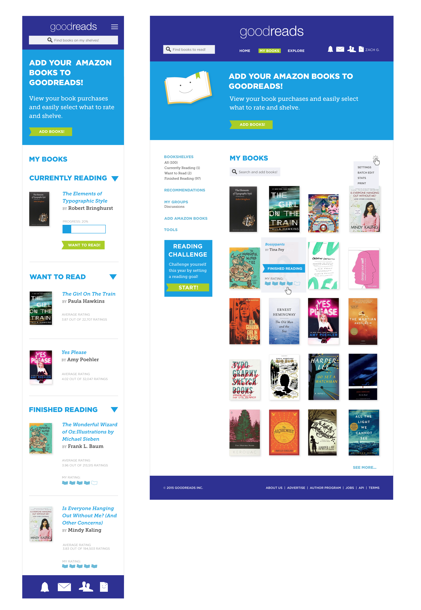

Carissa Melanson
UI/Graphic Designer
Goodreads Redesign


Project Brief
I interviewed old and current Goodreads users about their experience with the site. Asking them what features they enjoyed and what features they would like to see. After researching, interviewing, wordlists, style tiles and wireframes, my goal was to design a site that reflected the core values of Goodreads. Fun, engaging and light hearted.
View this project on Github.
Tools Used
Illustrator